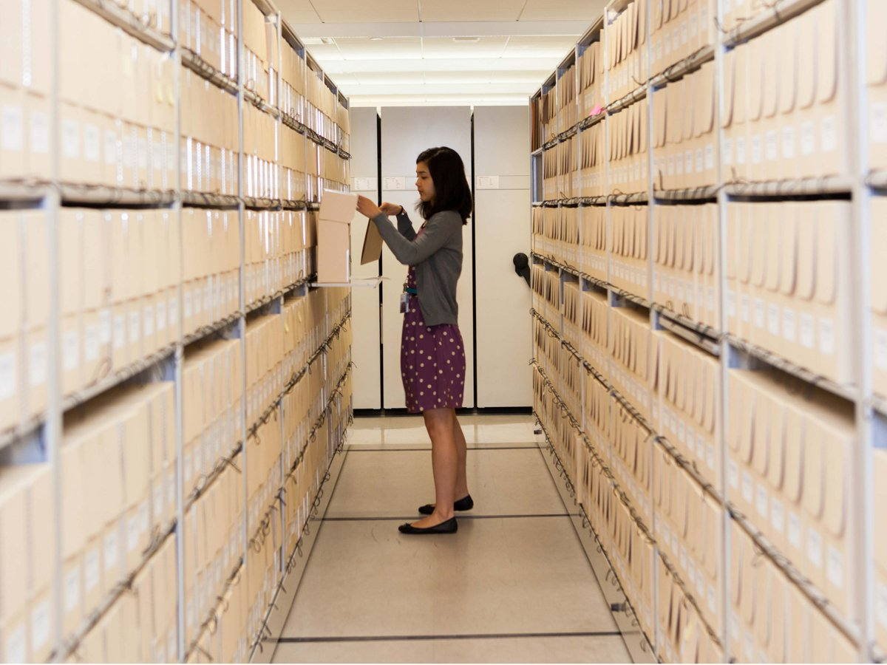

Why Archives Matter
An archive is a collection of records that a community decides are worth keeping: letters, photographs, meeting minutes, recordings, maps and more. Archivists are the people who choose, organize, protect and share them.

Photo credit: Laurie Lambrecht. ©Laurie Lambrecht.
Most of what we know about the past comes from records that someone saved on purpose. When records are lost, the people and events behind them can disappear from the story. That is why this site treats archiving as an act of care and not just storage.
What This Site Covers
The archivists page explains the work and the steps behind it. The cultural care page looks at why communities archive their own histories. The in practice page shows how records are handled with care and how you can help.